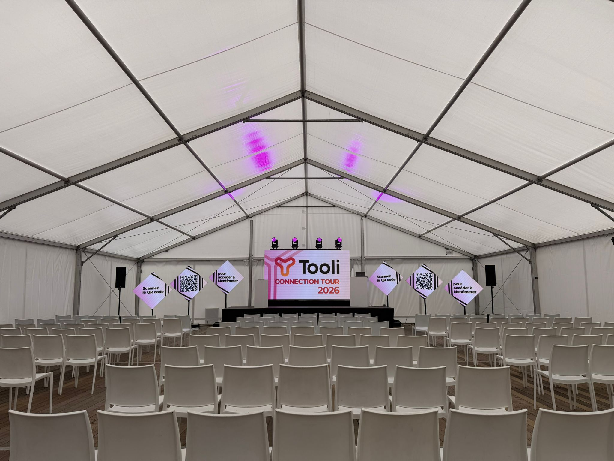
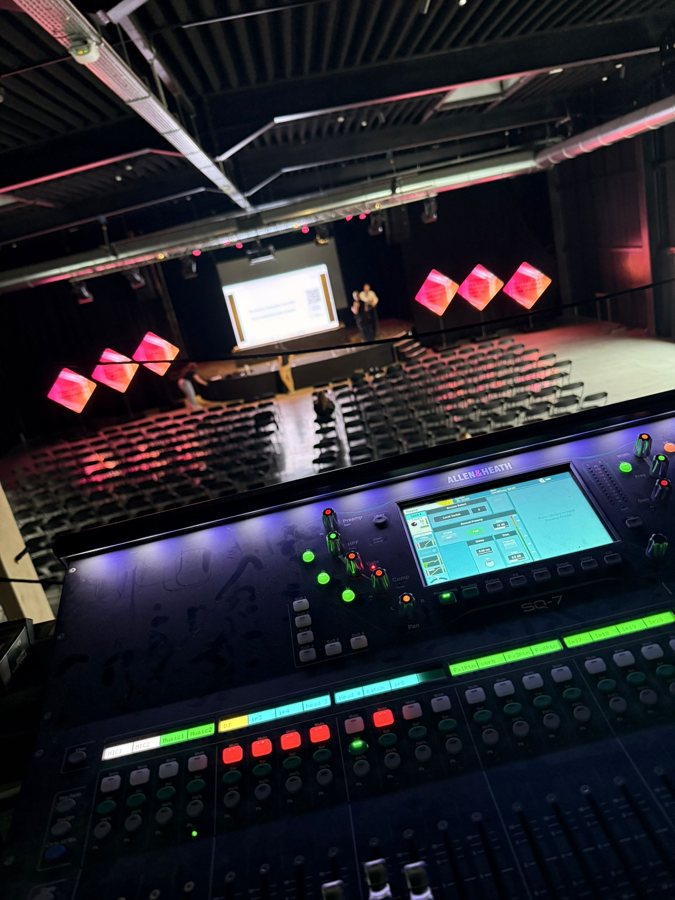

Dit is een documentaire die ik maakte over de leefgemeenschap "De Bereklauw". Dit is een project waar ik alleen aan werkte van idee tot afwerking in de montage.
Dit project was een groepsopdracht die ik maakte voor mijn oplijding. Ik stond in voor het beeld; van shotlist tot en met al het camerawerk.
Dit is nog een shoolprojectje dat ik leuk genoeg vond voor mijn portfolio. Ik stond in voor het beeld en de audio montage; alles van shotlist tot en met het volledige camera werk en het monteren en afmixen van de audio.
Deze animaties maakte ik in opdracht van Edisons voor een evenement van Tooli.

